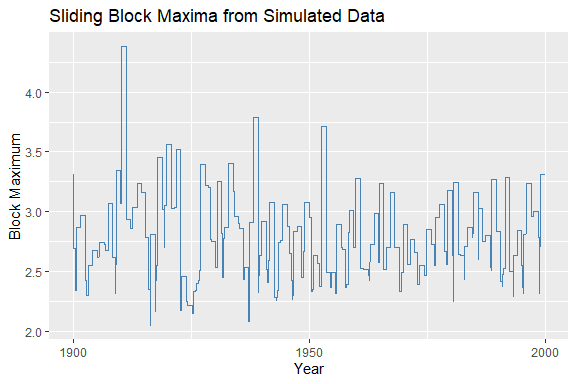

The maxbootR package provides fast and consistent bootstrap methods for block maxima, designed for applications in extreme value statistics. Under the hood, performance-critical parts are implemented in C++ via Rcpp, enabling efficient computation even for long time series.
These methods are based on the first consistent bootstrap approach for block maxima as introduced in Bücher & Staud (2024+): Bootstrapping Estimators based on the Block Maxima Method..
You can install the development version of maxbootR from GitHub with:
# install.packages("devtools")
devtools::install_github("torbenstaud/maxbootR")or from the official CRAN repository in R.
The following example demonstrates how to extract sliding block maxima from synthetic data.
library(ggplot2)
library(maxbootR)
library(dplyr)
#>
#> Attache Paket: 'dplyr'
#> Die folgenden Objekte sind maskiert von 'package:stats':
#>
#> filter, lag
#> Die folgenden Objekte sind maskiert von 'package:base':
#>
#> intersect, setdiff, setequal, union
# Generate 100 years of daily observations
set.seed(91)
x <- rnorm(100 * 365)
# Extract sliding block maxima with 1-year window
bms <- blockmax(xx = x, block_size = 365, type = "sb")
# Create time-indexed tibble for plotting
df <- tibble(
day = seq.Date(from = as.Date("1900-01-01"), by = "1 day", length.out = length(bms)),
block_max = bms
)
# Plot the block maxima time series
ggplot(df, aes(x = day, y = block_max)) +
geom_line(color = "steelblue") +
labs(
title = "Sliding Block Maxima from Simulated Data",
x = "Year",
y = "Block Maximum"
) 
We now use the maxbootr() function to bootstrap the 100-year return level of synthetic data, comparing the disjoint vs. sliding block bootstrap methods.
# Set block size (e.g., summer days)
bsize <- 92
# Generate synthetic time series
set.seed(1)
y <- rnorm(100 * bsize)
# Bootstrap using disjoint blocks (+timing)
system.time(
bst.db <- maxbootr(xx = y, est = "rl", block_size = bsize, B = 500,
type ="db", annuity = 100)
)
#> User System verstrichen
#> 0.61 0.06 0.67
# Bootstrap using sliding blocks (+timing)
system.time(
bst.sb <- maxbootr(xx = y, est = "rl", block_size = bsize, B = 500,
type = "sb", annuity = 100)
)
#> User System verstrichen
#> 7.88 0.02 7.89
# Compare variance
var(bst.sb) / var(bst.db)
#> [,1]
#> [1,] 0.5502442The sliding block method typically results in narrower bootstrap distributions, reducing statistical uncertainty.
For a full tutorial with real-world case studies (finance & climate), check out the vignette included in the package.
The implemented disjoint and sliding block bootstrap methods are grounded in the following foundational works:
The block bootstrap methodology itself is based on:
I plan to further enhance maxbootR by:
Your ideas and contributions are welcome — feel free to open an issue or pull request on GitHub!